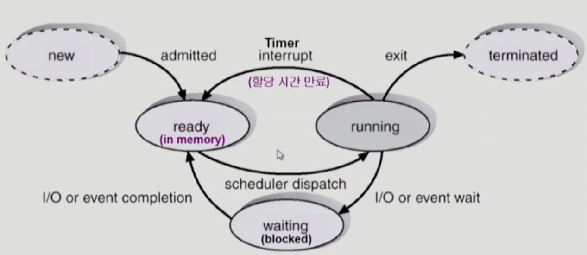
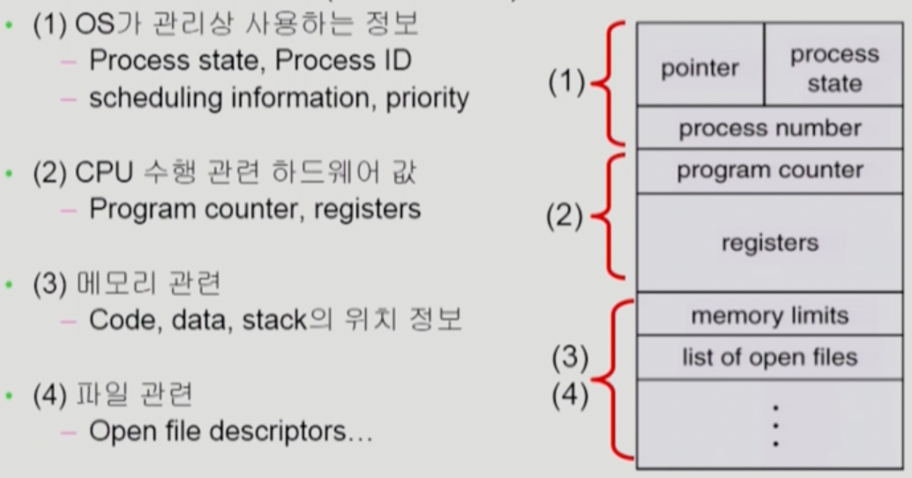
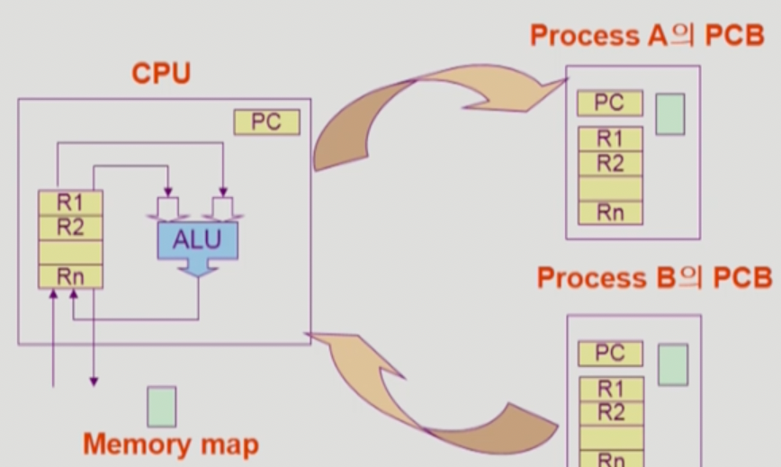
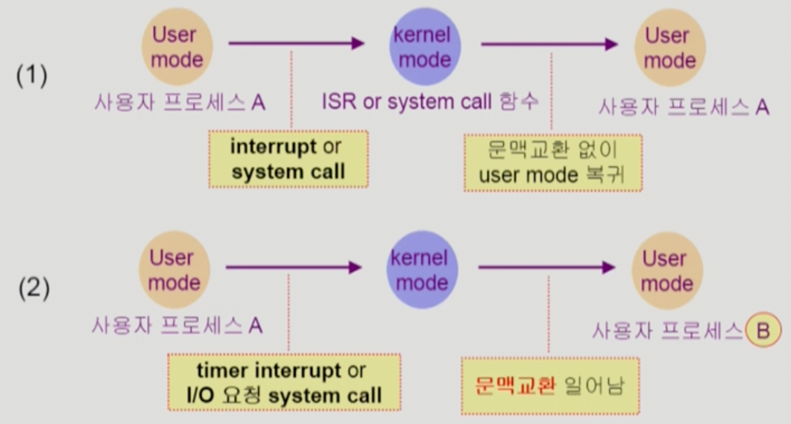
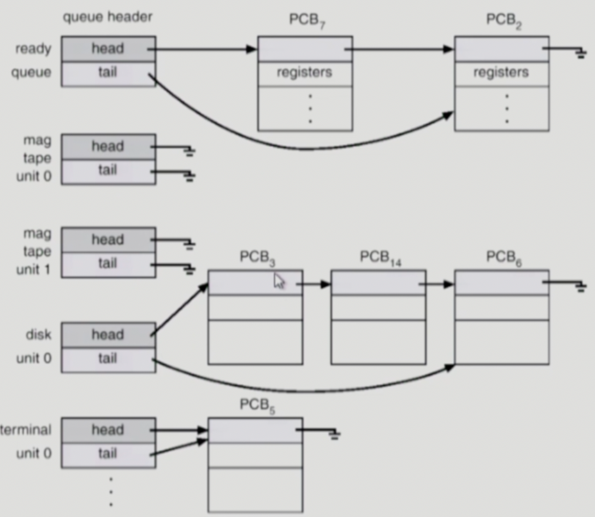
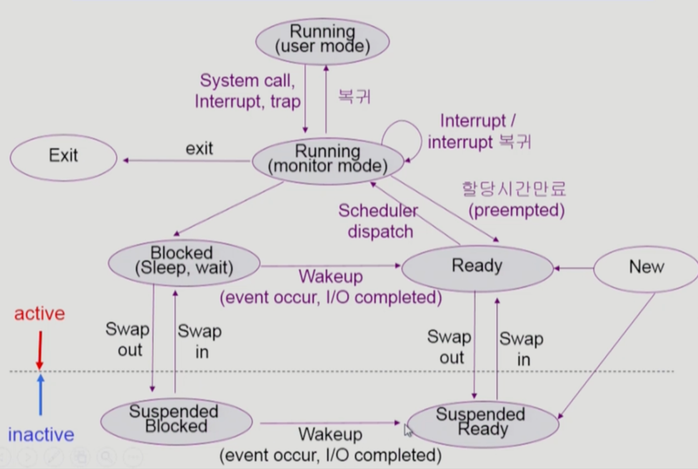
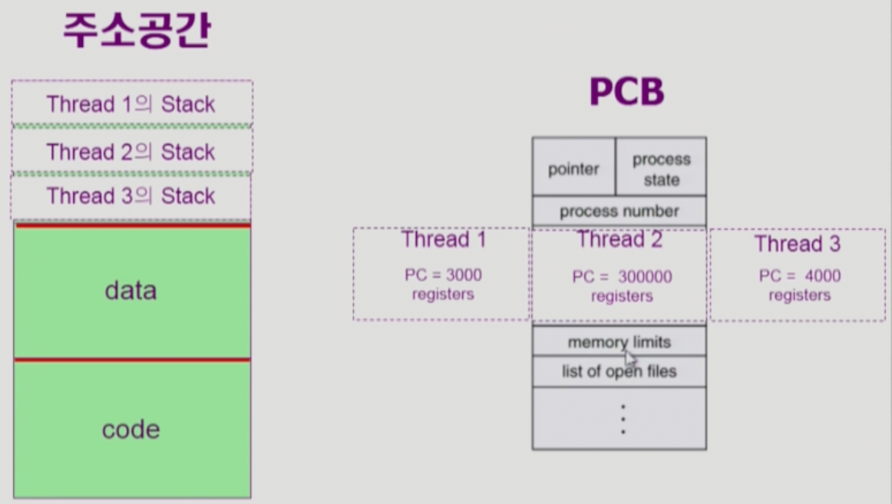

이화여자대학교 컴퓨터공학과 반효경 교수님의 "운영체제 (KOCW)" 강의를 필기한 내용입니다.
다소 잘못된 내용과 구어적 표현 이 포함되어 있을 수 있습니다.
Process and Context
- 일단 뭐 프로세스는 Program in Execution 을 의미한다.
- 여기서 이제 프로세스의 문맥(Context) 가 중요한데
- 이건 특정 프로세스가 어느 한 시점에 어떤 상태인지를 나타내는 정보라고 생각하면 된다
- 다음과 같이 세개로 분류해볼 수 있다
- CPU 상태( → 레지스터 상태): PC 나 다른 레지스터에 어떤 값이 들어와있었나
- MEM 상태: Code 부분에는 어떤 것들이 담겨있고 Data의 변수들에는 어떤 값이 들어있고 Stack에는 어떤 함수 호출이 쌓여있는지 등등
- Kernel 상태: 프로세스를 제어하기 위한 정보인 PCB에 어떤 값이 들어가있는지 혹은 해당 프로세스가 어떤 Syscall 을 호출해서 어떤 커널 함수들이 Kernel stack에 쌓여있는지
- 프로세스의 상태 관리가 필요한 이유는 Context switching 때문이다 → Time sharing등을 위해 실행중인 프로세스를 바꾸려면 실행중이던 프로세스의 상태를 완전히 백업하여 백업된 Context 를 다시 불러왔을 때 이전에 실행중이던 상태 그대로 재개되어야 하기 때문시
5 State Process Model

- 우리 빵효경 교수님은 5 State Process Model 로 설명을 한다
- 5가지 상태중에 중요한건 가운데에 3가지인 Running, Ready, Waiting(Blocked) 인데
- Running 은 CPU를 할당받아 한창 실행이 되고 있는 상태고
- 위 그림에서 보이는것처럼 Running 상태가 끝나는건 3가지 경우가 있다
- 타이머 종료
- 프로그램 종료 (Exit)
- 이벤트 발생 → 자발적 CPU 반납
- Ready 는 다른건 다 준비됐고 CPU만 할당받으면 다시 실행할 수 있는 상태를 의미한다
- 얘는 위 그림에서 보이는것처럼 프로세스가 생성되어 CPU만 받으면 되는 상태까지 오거나
- Running 상태였다가 Timer 가 끝나서 CPU를 뺏겼거나
- Block 을 먹었다가 Event 가 종료되어 다시 준비완료
- 그리고 Blocked 는 Syscall 등의 이벤트에 의해 지금 당장 CPU를 할당해주어도 실행할 수 없는 상태를 의미한다
- 여기서 이벤트는 IO 같은 Syscall 혹은 Interrupt 일 수도 있지만
- 조리퐁같은 경우에도 이벤트가 된다 → 다른 쓰레드가 이미 공유 데이터를 쓰고있어서 현재 프로세스가 접근할 수 없는 경우에도 이벤트라고 말할 수 있다
PCB (Process Control Block)

- 앞에서도 누누이 말했듯 커널에 저장되어 프로세스를 제어하기 위한 정보가 PCB (Process Control Block) 이고
- 4개정도의 파트로 이루어진다
- OS 관련 정보에는 (1) 프로세스의 상태 (2) PID (3) 스케줄링 정보와 (4) 우선순위 정보가 드가고
- CPU 관련 정보에는 PC를 포함한 레지스터의 값들
- MEM 관련 정보에는 해당 프로세스의 Code, Data, Stack 의 위치 (메모리 주소) 정보
- File 관련 정보에는 이놈이 열어놓은 파일 디스크립터들이 드간다.
Context Switch

- Context Switch 는 한 프로세스에서 다른 프로세스로 CPU 를 바꿔주는 과정인데
- 다음과 같은 과정을 거친다
- A(중고)의 문맥 (PC, Reg, MEM 등) 을 전부 A의 PCB에 때려넣는다
- B(새삥)의 PCB에서 이전 문맥을 가져다가 전부 세팅을 한다
- 근디 중요헌건 Context switch는 사용자 프로세스가 교체되었을 때에만 Context switch 라고 한다는 것이다.
- 아래 그림 봐봐라

- (1) 같은 경우에는 Interrupt 혹은 Syscall 이 일어나서 ISR 이나 Syscall func 가 싱행된 후에 다시 원래 프로세스로 돌아왔다 → 이경우에는 Context switch 라고 하지 않는다 이거야
- 일반적으로는 굳이 프로세스 교체가 필요하지 않은 이벤트의 경우에는 Context switch가 일어나지 않고 원래놈으로 되돌아온다
- 하지만 (2) 같은 경우에는 이건 못참지
- Timer interrupt의 경우에는 의도적으로 프로세스를 교체하기 위한 거고
- IO 의 경우에도 오래걸리기 때문에 거의 대부분 프로세스가 Block 된다
- 즉, 이런 경우에는 원래의 프로세스로 되돌아갈 수 없기 때문에 새로운 프로세스가 굴러들어오고, 따라서 Context switch 가 되었다고 표현한다.
- 이건 사용자 → 커널 전환보다 사용자 → 사용자 전환이 훨신 오버헤드가 크기 때문이랜다
- 예를들면 캐쉬를 비우는 Cache flush 의 경우에는 사용자 → 커널 전환에서는 완전 싹 비울 필요가 없기 때문에 이거로 인한 오버헤드가 현저히 적어진댄다
Process Queues

- 프로세스의 상태를 관리하기 위해 위처럼 Process Queue 가 소프트웨어적으로 구성되어있다
- 하지만 프로세스는 선입선출로 관리되지 않기 때문에 아마 우선순위큐로 구현이 되어있지 않을까 싶은데
- 어쨋든 대기 상태 큐인 Ready Queue하고
- Block 먹은 이후 각 디바이스에서의 처리를 기다리는 Device Queues 가 있댄다
- 마지막으로 모든 프로세스를 담는 Job Queue 가 존재한다
- 그리고 큐에 들어가는 각각의 원소들은 PCB로
- 아까 PCB의 그림에서 보면 PCB에 Pointer field 가 존재하는데 이걸 통해 각각의 PCB 들이 큐의 형태로 연결되어있게 된댄다
Scheduler
- Short term scheduler(→ CPU Scheduler): 어떤 프로세스에게 CPU를 줄지 말지 결정하는 스케줄러
- 즉, Ready queue 에 있는 프로세스들 중 어떤넘을 Running 으로 바꿀지 결정한다
- 프로세스는 아주 찰나의 순간만 CPU를 잡고 있다가 쫒겨나므로 매우 빈번하게 Scheduling 이 발생한다 → 따라서 이름이 Short term 인 것임
- Long term scheduler(→ Job Scheduler): 어떤 프로세스에게 메모리를 줄지 말지 결정하는 스케줄러
- 즉, New 상태에 있는 프로세스들 중 어떤놈을 Ready로 바꿀지 결정한다
- 이건 Multiprogramming level 을 결정하는데에 아주 중요한 역할을 한다
- 메모리에 너무 적은 프로세스가 올라가면 CPU가 비효율적이고 반대로 너무 많은 프로세스가 올라가있어도 중요한 부분이 메모리에 올라가지 못하기 때문에 IO가 너무 많이 일어나 CPU가 비효율적으로 작동한다
- 따라서 Degree of Multiprogramming 을 제어할 필요가 있고 이것 제어하는게 Long term scheduler 인 것
- 하지만 요즘의 Time sharing system에서는 사용하지 않고 일단 전부 Ready 로 박는다 → 이유는 바로 다음의 스케줄러가 존재하기 때문
- Medium term scheduler(→ Swapper): 어떤 프로세스를 스왑할지 결정하는 스케줄러
- Long term scheduler 가 사용되지 않는 대신 이놈이 Degree of Multiprogramming을 관장한다.
- 즉, 프로세스 몇개가 메모리에 올라갈지 결정하는 것을 메모리에 적재될 시점부터 정하는게 아니고 적재한 다음에 결정하겠다는 소리임
- 얘를 이용해 일단 프로세스가 생성되면 무적권 Ready 박고 Multiprogramming level 이 너무 높아지면 이 스케줄러를 이용해 프로세스 몇개를 디스크로 방출시켜서 낮추는 방식으로 작동한다더라
7 State Process Model

- 일단 먼저 주의할점은 맨 위에 Running 두개는 사실 하나의 상태라는 점이다
- 프로세스의 상태를 논할때는 무적권 사용자 프로세스를 말하지 커널 프로세스의 경우에는 상태의 개념이 없다
- 그래서 만일 사용자 프로세스가 작동하다가 이벤트가 발생해 커널 함수가 실행되는 경우에도 여전히 Running 상태라고 말하며 위의 그림에서는 그걸 Monitor mode 라고 구분지어준 것 뿐임
- 그래서 Medium term scheduler 가 등장하면서 새로운 상태인 Suspended ~ 가 등장하게 됐는데
- 이건 Blocked 랑은 완전히 다른 개념이다 → Blocked 의 경우에는 IO 등의 이벤트가 완전히 해결되고 난 뒤에는 다시 Ready 로 돌아오지만
- Suspended 의 경우에는 메모리에서 아주 퇴출된 상태를 의미하며 이놈이 메모리로 다시 올라오기 위해서는 Medium term scheduler 에 의해 다시 머리채가 잡혀 올라와야 한다는 것
- 그래서 메모리에 올라와있을 때를 Active 라고 하고 스왑되어 나갔을때는 Inactive 라고 한다
Thread

- 쓰레드 별거 없다
- 만약 동일한 코드를 이용해 여러개의 프로세스를 실행시키면 각 프로세스마다 주소공간하고 PCB가 생성되게 될텐데
- 이렇게 하면 Data 나 Code 등의 부분은 중복해서 메모리에 올라가므로 아주 비효율적이다 이말이야
- 그래서 Thread 라는 것을 생각해내게 됐는데
- 이건 Lightweight process 로 하나의 프로세스 내에서 별개의 작업을 하려고 할 때 공유할 수 있는 부분은 최대한 공유하고 분리해야만 하는 것만 분리시키자는 개념이다
- 전통적인 프로세스를 Heavyweight process 라고도 하며 이것은 쓰레드를 한개만 갖고 있는 프로세스와 동일하다
- 그래서 일단 분리해야 되는 부분은 다음과 같다
- PC: 당연히 쓰레드들마다 코드의 다른 부분을 실행시키고 있을 것이기 때문에 PC는 각 쓰레드마다 하나씩 있어야 할 것이다
- Reg set: 마찬가지로 레지스터의 값들도 쓰레드마다 다를게 분명하다
- Stack: 쓰레드들마다 코드의 다른 부분을 실행할 것이기 때문에 호출된 함수들도 다를것이고, 따라서 Stack 도 별도로 관리되어야 할 것이다
- 즉, PCB 의 구조에서 프로세스의 실행과 관련된 부분인 CPU 관련 필드, 그리고 주소 공간에서 스택이 쓰레드마다 갖고 있게 되는 것이다.
- 공통적인 부분은 프로세스 내에서 위의 세개를 뺀 나머지 (Data, Code 등등) 이며 이 부분을 Task 라고 하더라
- 쓰레드의 장점은 크게 네가지가 있다
- Responsiveness: 하나의 프로세스 내에서 하나의 쓰레드가 블락먹어도 다른 쓰레드가 계속 일을 할 수 있기 때문에 사용자에게 더 빠른 응답을 제공해 줄 수 있다.
- Resource Sharing: 쓰레드는 최소한만 생성하고 대부분 공유하기 때문에 메모리를 덜먹는다
- Economy: 이건 위의 장점에 의해 산출되는 장점인데 대부분 공유하기 때문에 Creating 혹은 Context Switching 을 할 때 일반적인 프로세스를 생성하거나 갈아치울때보다 현저리 적은 오버헤드를 가진다
- Utilization of MP(Multi Processor) Architectures: 프로세서가 여러개인 경우 쓰레드를 여러 프로세서에서 실행시켜 병렬작업이 가능해진다.
- 쓰레드 종류는 Kernel Thread 와 User Thread 가 있댄다
- Kernel Thread 는 쓰레드의 존재를 커널도 알고 따라서 Context switch 도 커널에 의해 이루어지지만
- POSIX 같은 User Thread 는 쓰레드의 존재를 커널은 모르고 라이브러리 형태로 제공된다 → 따라서 Context switch 등도 프로세스 딴에서 관리된다.